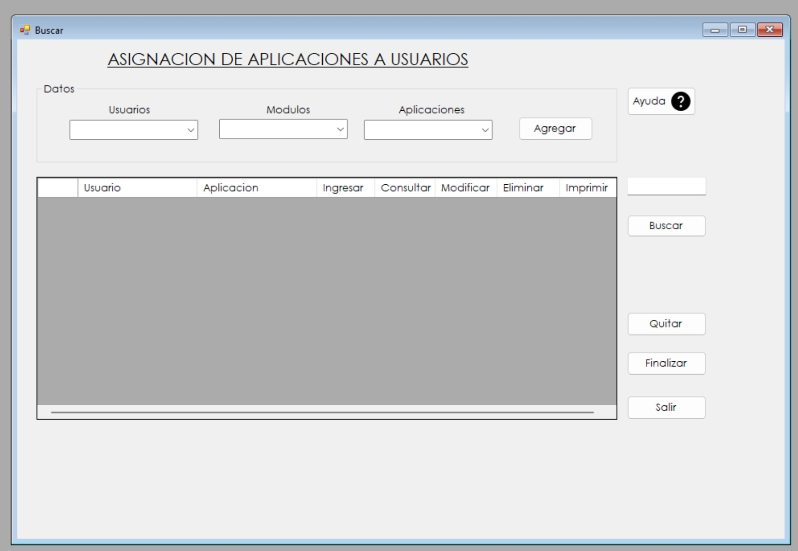
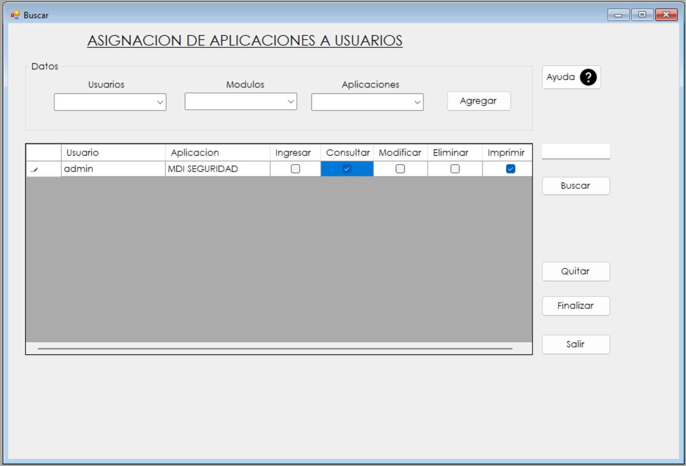
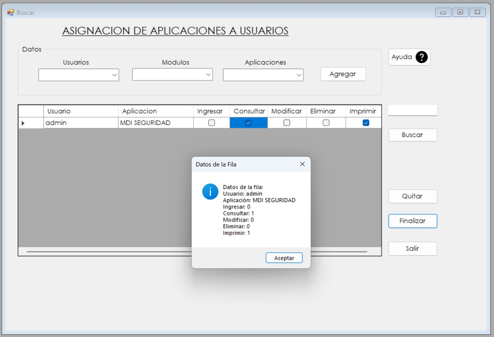

1. El formulario consta de tres listas desplegables, Usuarios, Modulos y Aplicaciones y una tabla para poder visualizar los permisos que se estan otorgando.
2. Seleccionamos el usuario deseado, luego en la lista de modulos se hara un filtro para las aplicaciones, segun el modulo seleccionado se mostraran las aplicaciones de ese modulo.

3. Damos clic en el boton de agregar y nos mostrara los permisos que se le pueden brindar a esa aplicacion, le damos check a los que necesitemos.
4. Por ultimo le damos clic al boton de finalizar y la asignacion de permisos estara completa y nos muestra un mensaje con los datos de la Fila.
5. Mensaje de datos ingresados correctamente.